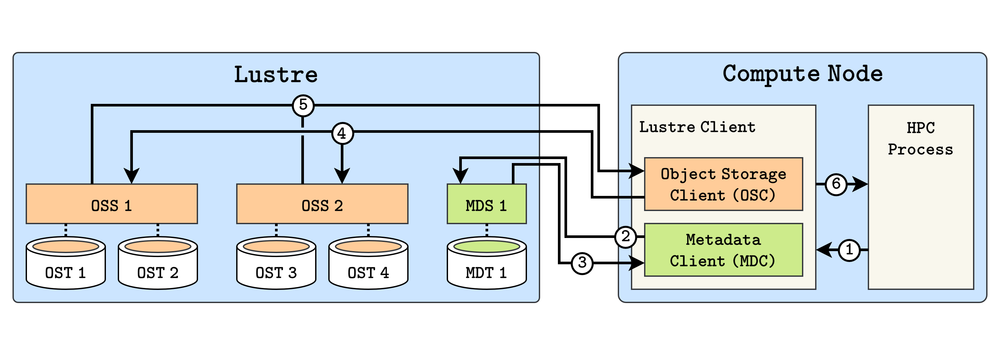
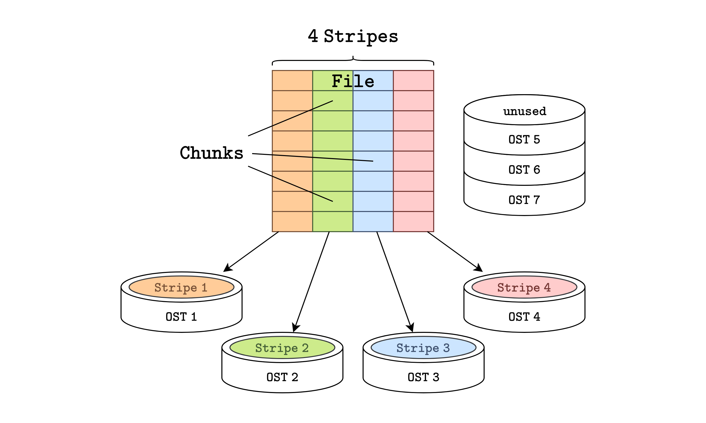
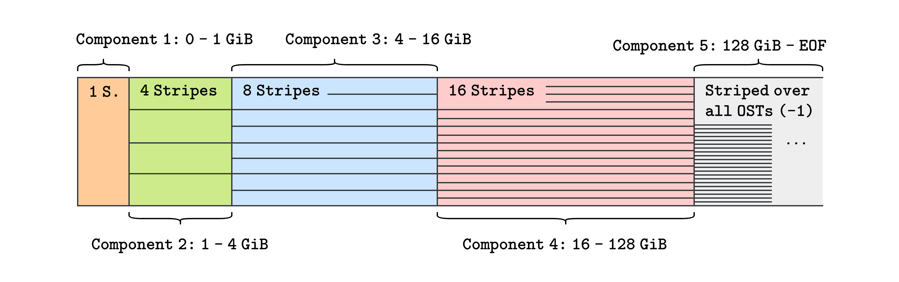

Lustre#
ZIH operates multiple parallel filesystems differing in capacity, architecture, performance
characteristics, feature sets, and intended use. With horse and walrus, two Lustre filesystems
are installed. Owing to the prevalence of Lustre as a parallel filesystem and its familiarity to
many users, this page aims to provide comprehensive information on the general architecture and
distinctive features of our installations.
Lustre is an object-based parallel filesystem. It is available as open source software, however the infrastructure at ZIH was installed by DDN and contains proprietary customisations.
Architectural Concepts#
Lustre is logically comprised of a management service (MGS), metadata services (MDS) and object storage services (OSS). Each service has its own storage target to persist its respective data: A management target (MGT), metadata targets (MDT) and object storage targets (OST). Data resides on one or more OSTs, and compute nodes act as clients retrieving data from the OSTs. Lustre is POSIX-compliant.
An exemplary procedure of opening a file on a simplified Lustre filesystem is showcased below. Its purpose is to illustrate the interaction between the most important components of Lustre, and the complexity involved in a simple operation.

Six steps are highlighted: (1) A process requests to open a file from Lustre. (2) The Lustre client running on the compute node first requests the metadata from the MDS. (3) The MDS retrieves the file’s metadata, including which OSTs store relevant fragments. (4) The client requests the data objects from the corresponding OSSs. (5) They return the data objects. (6) The client returns the file to the requesting process. In total, the network is accessed at least 4 separate times. Note that the MGS is not involved, since information about the filesystem configuration is only needed upon initial connection. Also note that this process is transparent to applications and Lustre can simply be used as an ordinary filesystem.
Striping#
Making use of the parallel nature of the Lustre filesystem happens mostly automatically. Parallelism is present in multiple ways: The available I/O bandwidth supports serving multiple clients simultaneously, and data accesses are distributed over many OSTs. Drive-level parallelism can be exploited by striping (large) files and distributing them across the drives. Lustre automatically handles this, but this is user-controllable behavior. Striping is illustrated below. A file is split into chunks of 1 MiB size each by default, and is then evenly distributed in a round-robin (a.k.a. “raid0”) fashion across all stripes, where one OST is assigned to each stripe. Lower stripe-counts benefit small files by avoiding I/O overhead, although this leaves OSTs unused.

To prevent re-striping as a file grows, Lustre implements Progressive File Layout (PFL). A file
is laid out as consecutive components, where the first 1 GiB might constitute the first component,
and the region from 1 GiB to 4 GiB might make up the second component, and so forth. Each component
may have a distinct striping configuration, such that I/O overhead is avoided for small files,
while parallelism is used effectively for large files. The illustration below closely resembles PFL
on our horse filesystem.

???+ example “Try it yourself”
This example demonstrates how to configure a Lustre Progressive File Layout (PFL) for a file on
our Lustre filesystem horse. In this example, we will create the directory pfl-test with a
specific striping layout (see inline comment), create a 4 GiB test file, and then verify the
resulting file layout using lfs getstripe.
```console
marie@login$ cd /data/horse/ws/marie-number_crunch
marie@login$ mkdir pfl-test
marie@login$ cd pfl-test
# Set the striping layout: 0..1 GiB: 4 SSD Stripes; 1..4 GiB 8 HDD Stripes;
# 4 GiB..EOF Stripes over all HDDs
marie@login$ lfs setstripe \
--component-end 1G --stripe-count 4 --pool ddn_ssd \
--component-end 4G --stripe-count 8 --pool ddn_hdd \
--component-end -1 --stripe-count -1 --pool ddn_hdd .
# Create a dummy file of size 4 GiB
marie@login$ dd if=/dev/zero of=testfile4G bs=1M count=4K
# See the result
marie@login$ lfs getstripe testfile4G
```
Observe that the first component of the file contains 4 stripes, the second contains 8, and the
last remains uninitialized. Be aware that this example is tailored to `horse`, as the pools may
be unavailable or named differently on other filesystems.
Storage Tiers and Caching#
A faster second tier of storage, as is available with horse’s SSD pool ddn_ssd, allows for
forms of caching. The presence of this SSD hot pool alongside the HDD cold pool allows
integration with DDN’s Hot Pools feature. Using a PFL, some or all components of a file could be
stored in the hot pool, improving access times especially for small files. Agents running on the
storage servers then migrate files between pools autonomously to free up space in the hot pool.
Migration is governed by one of two policies, unidirectional mode and bidirectional mode. In
unidirectional mode, which is in use with horse, the server-side agent lamigo mirrors files to
the cold pool after 7200 seconds at the earliest, and lpurge eventually removes their hot pool
copies. Files return to the hot pool only upon explicit migration, there is no SSD-caching in
unidirectional mode. Bidirectional mode works by aggregating accesses to each file over time into a
heat value, allowing to distinguish the hottest files and migrating/mirroring them to the hot
pool. Once a file has cooled off or others have surpassed its heat, it is evicted to the cold pool.
Hot Pools may overwrite a PFL-component’s pool/OST choice.
Since MDTs are usually flash-based, small files may also be stored on MDTs if the Data-on-MDT (DoM) feature is enabled. DoM complements PFL by storing a file’s first component on an MDT. Compared to storage on the hot pool, this also saves on network traffic between MDSs and OSSs. No ZIH storage system currently enables DoM by default, due to very limited space on the MDTs. While the feature is usable, please recall that the filesystem is a scarce shared resource and that DoM files compete with everyone else’s space for inodes. DoM could be configured as follows:
???+ example “Try it yourself”
```console
marie@login$ cd /data/horse/ws/marie-number_crunch
marie@login$ mkdir dom-test
marie@login$ cd dom-test
# The crucial component is "--layout mdt", as opposed to the default
# "--layout raid0"
marie@login$ lfs setstripe \
--component-end 1M \
--layout mdt \
--component-end -1 \
--stripe-count -1 .
# Create a 512 KiB dummy file that fits into the MDT component
marie@login$ dd if=/dev/zero of=testfile512K bs=64K count=8
# See the result and notice the first component:
# lcme_id: 1
# lcme_mirror_id: 0
# lcme_flags: init <-- data residing in the component
# lcme_extent.e_start: 0
# lcme_extent.e_end: 1048576
# lmm_stripe_count: 0
# lmm_stripe_size: 1048576
# lmm_pattern: mdt <-- component mapped to MDT
# lmm_layout_gen: 0
# lmm_stripe_offset: 0
marie@login$ lfs getstripe testfile512K
```
Apart from these Lustre-specific data placement techniques, the filesystem also benefits from the
RAM-backed page cache. As MDSs and OSSs are again Linux machines, they possess their own page
caches in addition to that on each compute node accessing the Lustre filesystem. An access to the
filesystem could therefore hit a multitude of page caches, which is an important detail for
filesystem analysis. See man lfs-ladvise for tooling relevant to the servers’ page caches.
RPCs in Lustre#
Communication within the Lustre filesystem works via Remote Procedure Calls (RPCs) over the
Lustre network layer LNet. Each metadata request to an MDS, for example, comprises at least one
RPC. The size of an RPC is limited by the amount of pages it may contain, which is a Lustre
configuration parameter. As a page is 4 KiB in size, a filesystem configured with at most 256 pages
per RPC limits an RPC’s size to 1 MiB. RPC traffic to the filesystem may be controlled in a
fine-grained manner, for example per client, per user or per job using Lustre’s Token Bucket
Filter (TBF) feature. Be aware that this implicitly imposes a bandwidth-limit. Detailed
information on RPC usage is available in /proc/fs/lustre/osc/*/rpc_stats or equivalently via
lctl get_param osc.scratch*.rpc_stats.
???+ example “Try it yourself”
In one shell, monitor RPCs on horse’s OST 0:
```console
# The OST scratch-OST0000 lies in the ddn_hdd pool on horse
marie@login$ watch --interval 1 \
cat /proc/fs/lustre/osc/scratch-OST0000*/rpc_stats
```
In another shell on the same node, create traffic on OST 0:
```console
marie@login$ cd /data/horse/ws/marie-number_crunch
marie@login$ mkdir rpc-test
marie@login$ cd rpc-test
# For simplicity, pin all stripes to OST 0 without using a PFL
marie@login$ lfs setstripe --ost 0 .
# Generate 64 MiB of traffic
marie@login$ dd if=/dev/urandom of=testfile bs=1M count=64
```
As `horse` allows 4096 pages per RPC, the maximum size of an RPC is 16 MiB. Hence the observed
number of write-RPCs with 4096 pages should increase by 4.
Usage and Good Practices#
!!! hint “Avoid accessing metadata information”
Querying metadata information such as file and directory attributes is a resource intensive task
in Lustre filesystems. When these tasks are performed frequently or over large directories, it
can degrade the filesystem's performance and thus affect all users.
In this sense, you should minimize the usage of system calls querying or modifying file
and directory attributes, e.g. stat(), statx(), open(), openat() etc.
Please, also avoid commands basing on the above mentioned system calls such as ls -l and
ls --color. Instead, you should invoke ls or ls -l <filename> to reduce metadata operations.
This also holds for commands walking the filesystems recursively performing massive metadata
operations such as ls -R, find, locate, du and df.
Lustre offers a number of commands that are suited to its architecture.
Good |
Bad |
|---|---|
|
|
|
|
|
|
|
|
In case commands such as du are needed, for example to identify large
directories, these commands should be applied to as little data as
possible. You should not just query the main directory in general, you
should try to work in the sub directories first. The deeper in the
structure, the better.
Searching the Directory Tree#
The command lfs find searches the directory tree for files matching the specified parameters.
marie@login$ lfs find <root directory> [options]
If no option is provided, lfs find will efficiently list all files in a given directory and its
subdirectories, without fetching any file attributes.
Useful options:
--atime nfile was last accessed n*24 hours ago--ctime nfile was last changed n*24 hours ago--mtime nfile was last modified n*24 hours ago--maxdepth nlimits find to descend at most n levels of directory tree--print0|-0print full file name to standard output if it matches the specified parameters, followed by a NUL character.--name argfilename matches the given filename (supporting regular expression and wildcards)--type [b|c|d|f|p|l|s]file has type: block, character, directory, file, pipe, symlink, or socket.
??? example “Example: List files older than 30 days”
The follwing command will find and list all files older than 30 days in the workspace
`/scratch/ws/0/marie-number_crunch`:
```console
marie@login$ lfs find /scratch/ws/0/marie-number_crunch --mtime +30 --type f
/scratch/ws/0/marie-number_crunch/jobfile.sh
/scratch/ws/0/marie-number_crunch/0001.dat
/scratch/ws/0/marie-number_crunch/load_profile.sh
/scratch/ws/0/marie-number_crunch/mes0001
/scratch/ws/0/marie-number_crunch/d3dump01.0002
/scratch/ws/0/marie-number_crunch/mes0032
/scratch/ws/0/marie-number_crunch/dump01.0003
/scratch/ws/0/marie-number_crunch/slurm-1234567.log
```
Useful Commands for Lustre#
These commands work for Lustre filesystems /data/horse and /data/walrus. In order to hold this
documentation as general as possible we will use <filesystem> as a placeholder for the Lustre
filesystems. Just replace it when invoking the commands with the Lustre filesystem of interest.
Lustre’s lfs client utility provides several options for monitoring and configuring your Lustre
environment.
lfs can be used in interactive and in command line mode. To enter the interactive mode, you just
call lfs and enter your commands. Since, both modes provide identical options, we use the command
line mode within this documentation.
!!! hint “Filesystem vs. Path”
If you provide a path to the lfs commands instead of a filesystem, the lfs option is applied to
the filesystem this path is in. Thus, the passed information refers to the whole filesystem,
not the path.
You can retrieve a complete list of available options:
marie@login$ lfs --list-commands
setstripe getstripe setdirstripe getdirstripe
mkdir rm_entry pool_list find
check osts mdts df
[...]
To get more information on a specific option, enter help followed by the option of interest:
marie@login$ lfs help df
df: report filesystem disk space usage or inodes usage of each MDS and all OSDs or a batch belonging to a specific pool.
Usage: df [--inodes|-i] [--human-readable|-h] [--lazy|-l]
[--pool|-p <fsname>[.<pool>]] [path]
More comprehensive documentation can be found in the man pages of lfs (man lfs).
Listing Disk Space Usage#
The command lfs df lists the filesystems disk space usage:
marie@login$ lfs df -h <filesystem>
Useful options:
-houtputs the units in human readable format.-ireports inode usage for each target and in summary.
!!! example “Example disk space usage at /scratch”
At one moment in time, the disk space usage of the Lustre filesystem `/scratch` was:
```console
lfs df -h /scratch
UUID bytes Used Available Use% Mounted on
scratch2-MDT0000_UUID 4.0T 502.8G 3.6T 13% /lustre/scratch2[MDT:0]
scratch2-MDT0001_UUID 408.0G 117.7G 290.3G 29% /lustre/scratch2[MDT:1]
scratch2-OST0000_UUID 28.9T 25.1T 3.7T 88% /lustre/scratch2[OST:0]
scratch2-OST0001_UUID 28.9T 24.7T 4.1T 86% /lustre/scratch2[OST:1]
scratch2-OST0002_UUID 28.9T 25.0T 3.9T 87% /lustre/scratch2[OST:2]
scratch2-OST0003_UUID 28.9T 25.1T 3.8T 87% /lustre/scratch2[OST:3]
[...]
scratch2-OST008d_UUID 28.9T 25.0T 3.8T 87% /lustre/scratch2[OST:141]
scratch2-OST008e_UUID 28.9T 24.9T 4.0T 87% /lustre/scratch2[OST:142]
scratch2-OST008f_UUID 28.9T 25.3T 3.6T 88% /lustre/scratch2[OST:143]
filesystem_summary: 4.1P 3.5P 571.8T 87% /lustre/scratch2
```
The disk space usage is displayed separately for each MDS and OST as well in total. You can see
that the usage is quite balanced between all MDSs and OSTs.
If very large files are not properly stripped across several OSTs, the filesystem might become
unbalanced with one server near 100% full.
Listing Personal Disk Usages and Limits#
To list your personal filesystem usage and limits (quota), invoke
marie@login$ lfs quota -h -u $USER <filesystem>
Useful options:
-houtputs the units in human readable format.-u|-g|-p <arg>displays quota for specific user, group or project.-vdisplays the usage on each OST.
Listing OSTs#
You can list all OSTs available in a particular Lustre filesystem using lfs osts:
marie@login$ lfs osts <filesystem>
If a path is specified, only OSTs belonging to the specified path are displayed.
View Striping Information#
marie@login$ lfs getstripe myfile
marie@login$ lfs getstripe -d mydirectory
The argument -d will also display striping for all files in the directory.